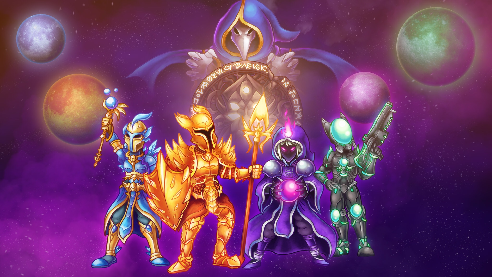

Terraria é um RPG de ação-aventura independente produzido pela desenvolvedora de jogos Re-Logic. Possui como características a exploração, artesanato, construção de estruturas e combate a monstros perigosos em um mundo 2D gerado proceduramente.
O aspecto RPG e criação de personagens no jogo é dividio em 4 classes: Físico (Melee), Mago (Mage), Atirador (Ranged) e Invocador (Summoner).

Neste guia você aprenderá como construir seu personagem em cada uma das 3 etapas de progressão do jogo: Pré-Chefes, Pré-Hardmode e Hardmode.
Selecione uma das 4 Classes disponíveis: